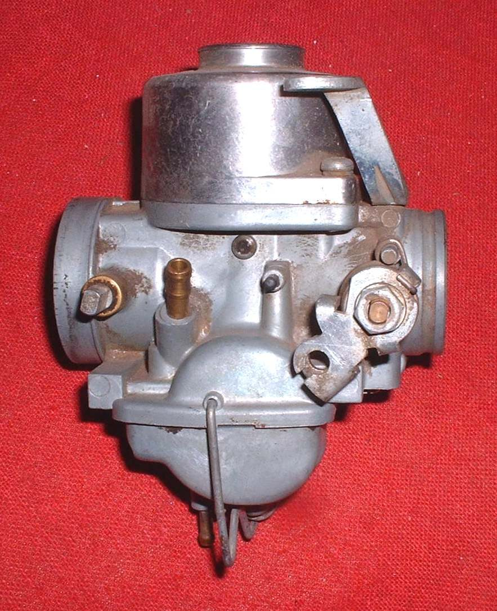
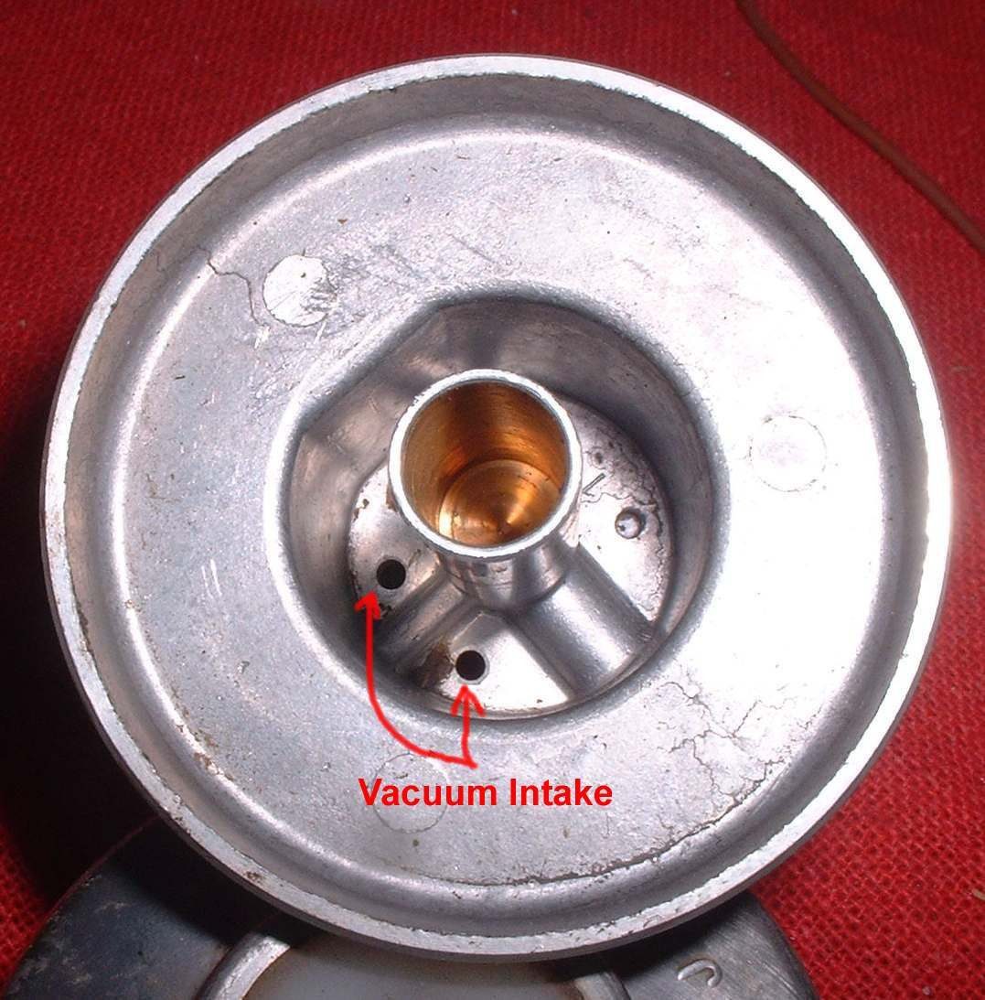
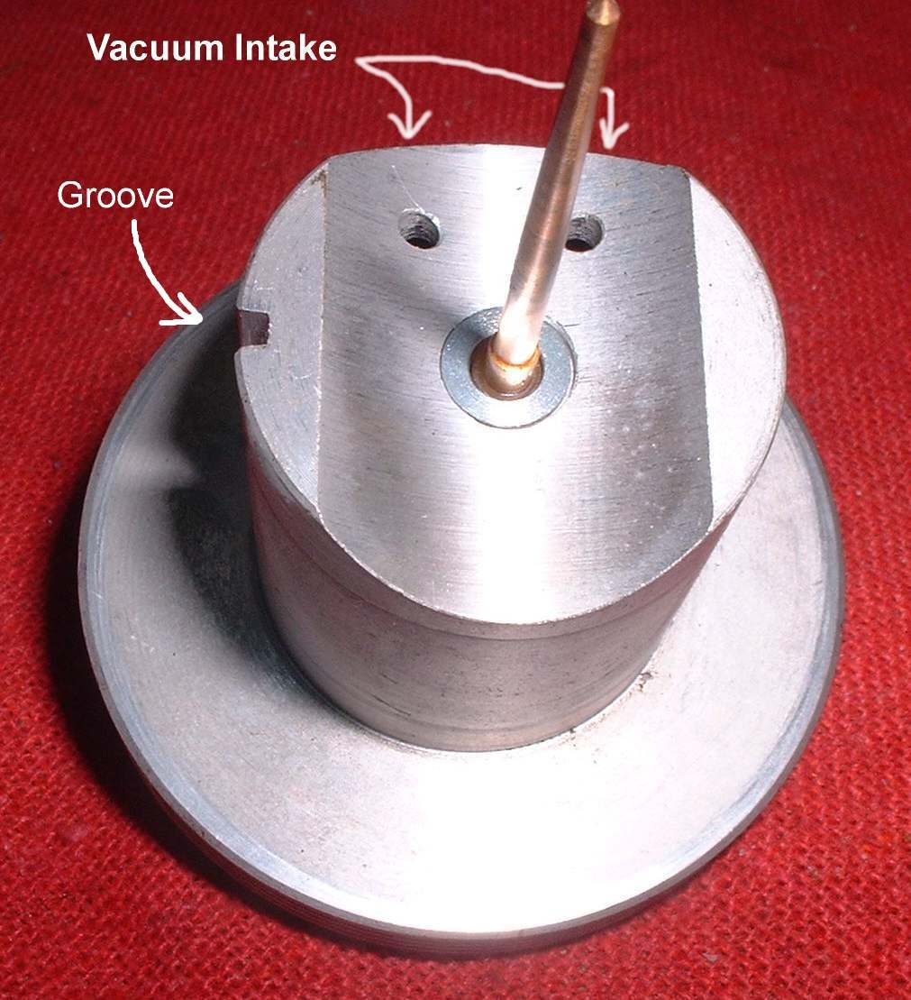
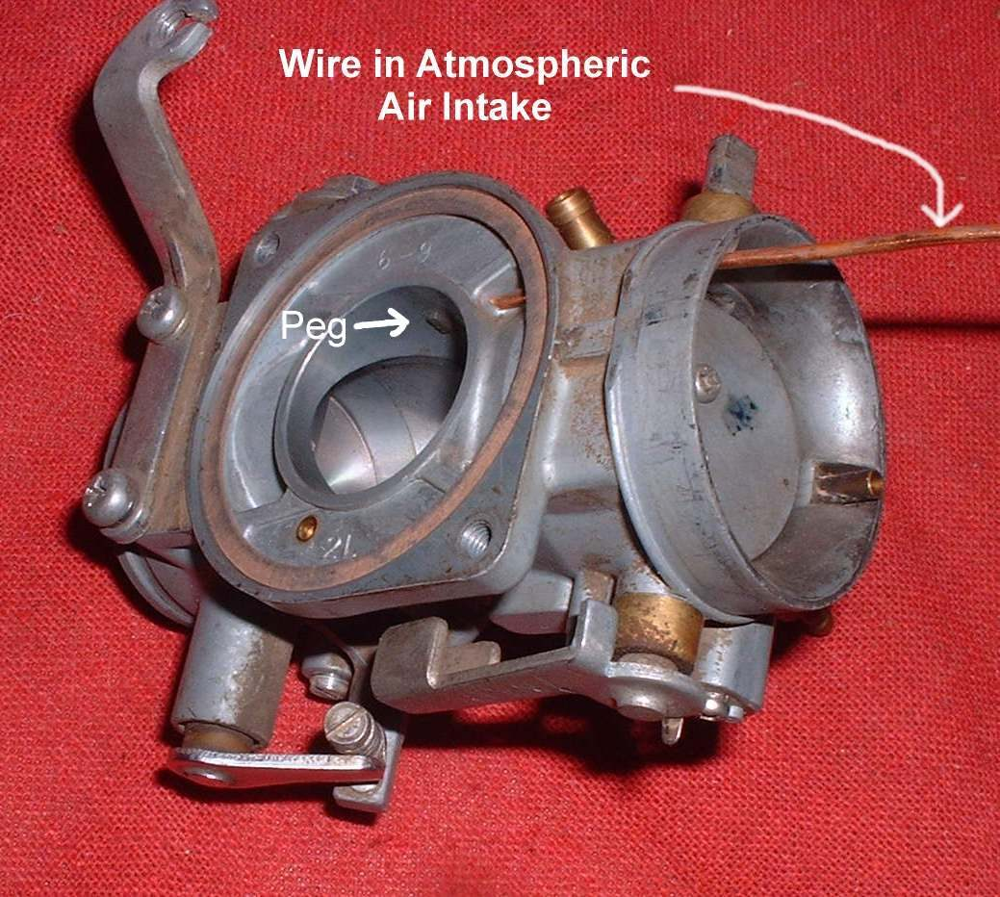
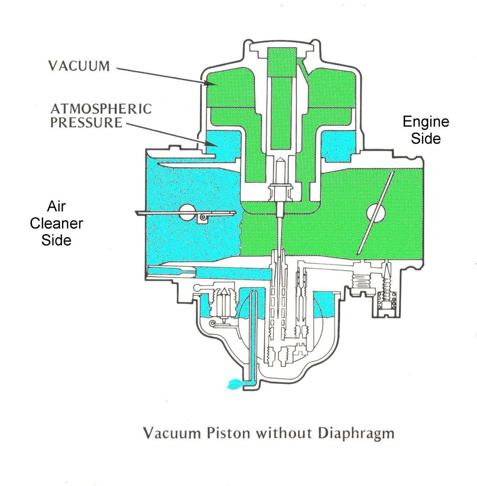

On an ordinary slide carburettor the throttle cable lifts the slide directly. Snapped fully open from idle, the suction falls to almost nothing, so no fuel is drawn and the engine stumbles or dies. A CV (constant velocity, also called constant depression) carburettor avoids this. The cable works a throttle plate in the throat, and engine suction lifts the slide by itself. This check finds a slide that sticks, lifts late or does not drop.
How it works
- Suction from the engine side travels through holes in the slide to the space above it and lifts it. Air at normal pressure from the air cleaner side fills the space below, so the slide rises smoothly.
- Closing the throttle lets the slide drop, helped by its weight (piston type) or a light spring (diaphragm type).
- Piston type: a solid piston with a labyrinth seal. Diaphragm type: a rubber diaphragm whose edge seals in a groove in the body. Some Honda carburettors use a diaphragm and a plunger together.
- On a multi-carburettor engine, correct adjustment lets the engine rev up smoothly from idle however fast the throttle is opened.
Safety
- Fuel burns. Engine off, cool, no flame near. Turn the fuel tap off.
- Handle the diaphragm gently. Do not push a tool through it.
Steps
- Remove the air filter and look into the throat. The slide should be seen to lift when you open the throttle plate, and drop when you close it. Lift it by hand through the intake with a clean finger: it must rise and fall freely, with no stiffness.
- Take off the top cover, spring and slide. Note how the slide is located (a peg in the body fits a groove in the piston, or a rubber peg in the diaphragm fits the body).
- Hold the diaphragm up to a light. Any pinhole, crack, hard or swollen part means it must be replaced. Check the edge bead that seals the groove.
- Check the small vacuum holes in the slide and the air passages from the air cleaner side. Blow through them with air. A blocked hole slows the slide.
- Check the piston and body for scoring and dirt. Clean with carburettor cleaner.
- Refit with the peg in its groove and the diaphragm edge fully in its groove. A pinched edge leaks.
Check your work
- The slide rises and falls freely by hand.
- Throttle opened quickly from idle gives smooth acceleration, without a stumble.